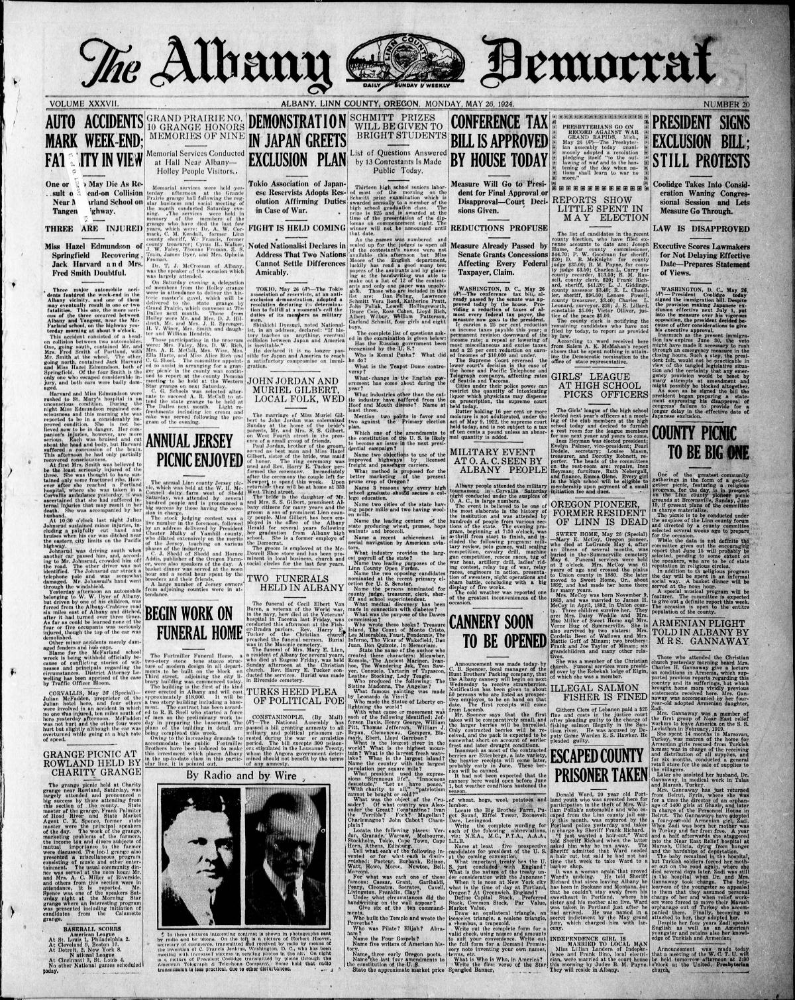
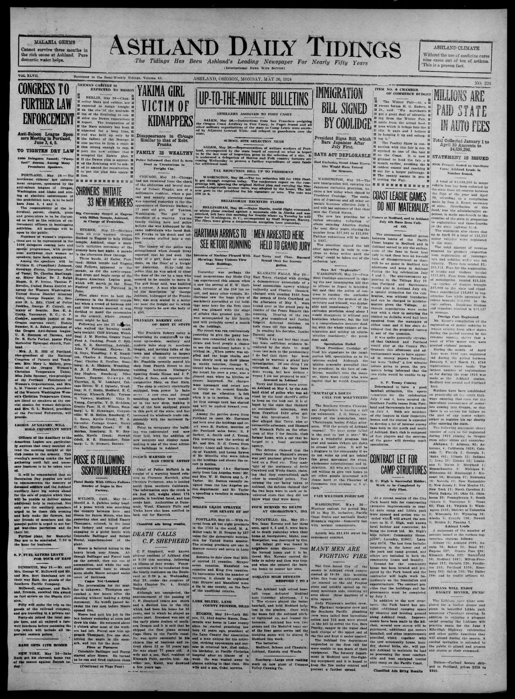

HN HN-437 · May 26, 1924 · Politics, Government & Diplomacy > Legislation & Government Policy > New laws
Source: Indianapolis Times, p. 1 — original page; National Archives immigration history.
Report: The front-page headline 'Japanese Exclusion Act Is Law' announced President Calvin Coolidge's signature of a sweeping new immigration restriction, particularly emphasizing exclusion of Japanese immigrants. The text includes Coolidge's public objection to the Japanese exclusion clause while signing the broader bill for its other provisions; the exclusion was set to take effect July 1.
Assessment: The Immigration Act of 1924 established a national-origins quota based on 2% of each nationality's U.S. population in the 1890 census and excluded immigrants ineligible for naturalization, including Japanese citizens. Coolidge's stated regret does not undo the exclusionary statute he signed. The period's anti-immigrant claims are not established by their appearance in news coverage.
Authentic scans retrieved from Historic Oregon Newspapers (University of Oregon). Article crops are located using the archive's own OCR word coordinates and rendered at native crop resolution; page scans are reduced-size access renditions. No images were generated, mocked, or retouched.


Not yet acquired. Queued for provider-specific acquisition testing (see source-acquisition manifest).
URL (preserved verbatim): https://newspapers.library.in.gov/?a=d&d=IPT19240526.1.1
Saved research report: Historical_Newspaper_Event_Research_428-452_2026-10-23.md
Evidence note: A newspaper report means a historical publication made a claim; it does not establish that claim as fact. Contemporary reporting is separated from later scholarly context and our own assessment.